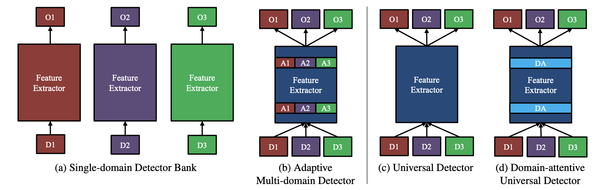
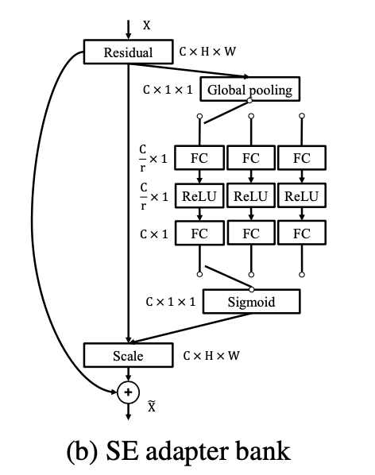
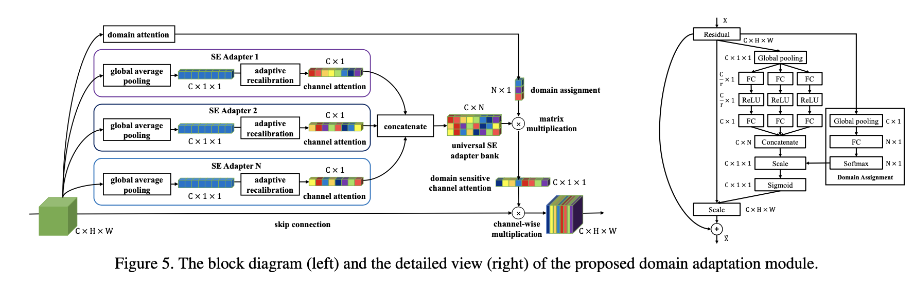

URL:https://arxiv.org/abs/1904.04402
这篇论文的立意很高,想解决目前检测任务不同场景不同模型的现状，用一个universal detector来cover不同的检测场景，比如论文中就把检测常用的benchmark merge到一起作为universal detector的评估数据集，这些数据集包括 wider face（人脸数据集）、KITTI（自动驾驶数据集）等。

针对unviersal deteciton常见的解决方案论文里提了有4种，第一种Single-domain Detector Bank，最naive的方式，也是目前最常见的，那就是每个任务每个模型，比如wider face有wider face对应的detector，KITTI就有KITTI对应的detector，两者没有任何耦合。
第二种Adaptive Multi-domain Detector，在第一种模型的基础上结合了domain adaptation常用的方法将多个模型merge到一个模型中出。做法是论文中提到的SE adapter bank，这也是domain adaption常用的解决方法，会在出检测的分支以外加一个cls分支来判断当前样本属于哪个domain（通常用GAN的逻辑来对抗学习），只是论文中采用来SE的结构来做，至于为什么是SE论文给的理由其实很牵强，暂且认为是结果比较好而已吧：

第三种Universal Detector，也是非常naive的做法，所有场景都放到一个模型中，所有数据怼到一起训练，比第一种方法还要简单粗暴。
至于第四种Domain-attentive Universal Detector就是这个论文的核心了。看示意图的话其实第四种做法和第二种做法很像，其实实际做的时候也的确很像……两者最大的区别就是第二种方法SE adapter bank训练的时候global pooling下有一个开关来判断当前样本是否属于某一个domain，这就意味着模型的训练必须已知特定的domain，那么在第四种方法中就优化了这一步操作做到domain 无关，做法很简单直接干掉这个开关，domain信息变成自学习(SE的做法，论文中称为domain attention)：

作者将前两种没有归为universal detector因为他们的训练需要已知具体的domain信息，因此是domain specific的，第三种第四种不需要额外的domain信息所以被定义为universal deteciton. 至于论文的点看一下就好，论文的意义更多的是提出一个新的做法吧